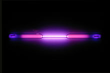

Argon
|  | |||||||||||||||||||||||||||||||||||||||||||||||||||||||||||||||||||||||||||||||||||||||||||||||||||||||||||||||||||||||||||||||||||||||||||||||||||||||||||||||||||||||||||||||||||||||||||||||||||||||||||||||||||||||||||||||||||||
|
Spectral lines of argon
|
|||||||||||||||||||||||||||||||||||||||||||||||||||||||||||||||||||||||||||||||||||||||||||||||||||||||||||||||||||||||||||||||||||||||||||||||||||||||||||||||||||||||||||||||||||||||||||||||||||||||||||||||||||||||||||||||||||||
| General properties | |||||||||||||||||||||||||||||||||||||||||||||||||||||||||||||||||||||||||||||||||||||||||||||||||||||||||||||||||||||||||||||||||||||||||||||||||||||||||||||||||||||||||||||||||||||||||||||||||||||||||||||||||||||||||||||||||||||
|---|---|---|---|---|---|---|---|---|---|---|---|---|---|---|---|---|---|---|---|---|---|---|---|---|---|---|---|---|---|---|---|---|---|---|---|---|---|---|---|---|---|---|---|---|---|---|---|---|---|---|---|---|---|---|---|---|---|---|---|---|---|---|---|---|---|---|---|---|---|---|---|---|---|---|---|---|---|---|---|---|---|---|---|---|---|---|---|---|---|---|---|---|---|---|---|---|---|---|---|---|---|---|---|---|---|---|---|---|---|---|---|---|---|---|---|---|---|---|---|---|---|---|---|---|---|---|---|---|---|---|---|---|---|---|---|---|---|---|---|---|---|---|---|---|---|---|---|---|---|---|---|---|---|---|---|---|---|---|---|---|---|---|---|---|---|---|---|---|---|---|---|---|---|---|---|---|---|---|---|---|---|---|---|---|---|---|---|---|---|---|---|---|---|---|---|---|---|---|---|---|---|---|---|---|---|---|---|---|---|---|---|---|---|---|---|---|---|---|---|---|---|---|---|---|---|---|---|---|---|
| Name, symbol | argon, Ar | ||||||||||||||||||||||||||||||||||||||||||||||||||||||||||||||||||||||||||||||||||||||||||||||||||||||||||||||||||||||||||||||||||||||||||||||||||||||||||||||||||||||||||||||||||||||||||||||||||||||||||||||||||||||||||||||||||||
| Pronunciation | /ˈɑrɡɒn/ AR-gon |
||||||||||||||||||||||||||||||||||||||||||||||||||||||||||||||||||||||||||||||||||||||||||||||||||||||||||||||||||||||||||||||||||||||||||||||||||||||||||||||||||||||||||||||||||||||||||||||||||||||||||||||||||||||||||||||||||||
| Appearance | colorless gas exhibiting a lilac/violet glow when placed in a high voltage electric field | ||||||||||||||||||||||||||||||||||||||||||||||||||||||||||||||||||||||||||||||||||||||||||||||||||||||||||||||||||||||||||||||||||||||||||||||||||||||||||||||||||||||||||||||||||||||||||||||||||||||||||||||||||||||||||||||||||||
| Argon in the periodic table | |||||||||||||||||||||||||||||||||||||||||||||||||||||||||||||||||||||||||||||||||||||||||||||||||||||||||||||||||||||||||||||||||||||||||||||||||||||||||||||||||||||||||||||||||||||||||||||||||||||||||||||||||||||||||||||||||||||
|
|||||||||||||||||||||||||||||||||||||||||||||||||||||||||||||||||||||||||||||||||||||||||||||||||||||||||||||||||||||||||||||||||||||||||||||||||||||||||||||||||||||||||||||||||||||||||||||||||||||||||||||||||||||||||||||||||||||
| Atomic number | 18 | ||||||||||||||||||||||||||||||||||||||||||||||||||||||||||||||||||||||||||||||||||||||||||||||||||||||||||||||||||||||||||||||||||||||||||||||||||||||||||||||||||||||||||||||||||||||||||||||||||||||||||||||||||||||||||||||||||||
| Standard atomic weight (±) | 39.948(1)[1] | ||||||||||||||||||||||||||||||||||||||||||||||||||||||||||||||||||||||||||||||||||||||||||||||||||||||||||||||||||||||||||||||||||||||||||||||||||||||||||||||||||||||||||||||||||||||||||||||||||||||||||||||||||||||||||||||||||||
| Element category | noble gas | ||||||||||||||||||||||||||||||||||||||||||||||||||||||||||||||||||||||||||||||||||||||||||||||||||||||||||||||||||||||||||||||||||||||||||||||||||||||||||||||||||||||||||||||||||||||||||||||||||||||||||||||||||||||||||||||||||||
| Group, block | group 18 (noble gases), p-block | ||||||||||||||||||||||||||||||||||||||||||||||||||||||||||||||||||||||||||||||||||||||||||||||||||||||||||||||||||||||||||||||||||||||||||||||||||||||||||||||||||||||||||||||||||||||||||||||||||||||||||||||||||||||||||||||||||||
| Period | period 3 | ||||||||||||||||||||||||||||||||||||||||||||||||||||||||||||||||||||||||||||||||||||||||||||||||||||||||||||||||||||||||||||||||||||||||||||||||||||||||||||||||||||||||||||||||||||||||||||||||||||||||||||||||||||||||||||||||||||
| Electron configuration | [Ne] 3s2 3p6 | ||||||||||||||||||||||||||||||||||||||||||||||||||||||||||||||||||||||||||||||||||||||||||||||||||||||||||||||||||||||||||||||||||||||||||||||||||||||||||||||||||||||||||||||||||||||||||||||||||||||||||||||||||||||||||||||||||||
| per shell | 2, 8, 8 | ||||||||||||||||||||||||||||||||||||||||||||||||||||||||||||||||||||||||||||||||||||||||||||||||||||||||||||||||||||||||||||||||||||||||||||||||||||||||||||||||||||||||||||||||||||||||||||||||||||||||||||||||||||||||||||||||||||
| Physical properties | |||||||||||||||||||||||||||||||||||||||||||||||||||||||||||||||||||||||||||||||||||||||||||||||||||||||||||||||||||||||||||||||||||||||||||||||||||||||||||||||||||||||||||||||||||||||||||||||||||||||||||||||||||||||||||||||||||||
| Phase | gas | ||||||||||||||||||||||||||||||||||||||||||||||||||||||||||||||||||||||||||||||||||||||||||||||||||||||||||||||||||||||||||||||||||||||||||||||||||||||||||||||||||||||||||||||||||||||||||||||||||||||||||||||||||||||||||||||||||||
| Melting point | 83.81 K (−189.34 °C, −308.81 °F) | ||||||||||||||||||||||||||||||||||||||||||||||||||||||||||||||||||||||||||||||||||||||||||||||||||||||||||||||||||||||||||||||||||||||||||||||||||||||||||||||||||||||||||||||||||||||||||||||||||||||||||||||||||||||||||||||||||||
| Boiling point | 87.302 K (−185.848 °C, −302.526 °F) | ||||||||||||||||||||||||||||||||||||||||||||||||||||||||||||||||||||||||||||||||||||||||||||||||||||||||||||||||||||||||||||||||||||||||||||||||||||||||||||||||||||||||||||||||||||||||||||||||||||||||||||||||||||||||||||||||||||
| Density at stp (0 °C and 101.325 kPa) | 1.784 g·L−1 | ||||||||||||||||||||||||||||||||||||||||||||||||||||||||||||||||||||||||||||||||||||||||||||||||||||||||||||||||||||||||||||||||||||||||||||||||||||||||||||||||||||||||||||||||||||||||||||||||||||||||||||||||||||||||||||||||||||
| when liquid, at b.p. | 1.3954 g·cm−3 | ||||||||||||||||||||||||||||||||||||||||||||||||||||||||||||||||||||||||||||||||||||||||||||||||||||||||||||||||||||||||||||||||||||||||||||||||||||||||||||||||||||||||||||||||||||||||||||||||||||||||||||||||||||||||||||||||||||
| Triple point | 83.8058 K, 68.89 kPa[2] | ||||||||||||||||||||||||||||||||||||||||||||||||||||||||||||||||||||||||||||||||||||||||||||||||||||||||||||||||||||||||||||||||||||||||||||||||||||||||||||||||||||||||||||||||||||||||||||||||||||||||||||||||||||||||||||||||||||
| Critical point | 150.687 K, 4.863 MPa[2] | ||||||||||||||||||||||||||||||||||||||||||||||||||||||||||||||||||||||||||||||||||||||||||||||||||||||||||||||||||||||||||||||||||||||||||||||||||||||||||||||||||||||||||||||||||||||||||||||||||||||||||||||||||||||||||||||||||||
| Heat of fusion | 1.18 kJ·mol−1 | ||||||||||||||||||||||||||||||||||||||||||||||||||||||||||||||||||||||||||||||||||||||||||||||||||||||||||||||||||||||||||||||||||||||||||||||||||||||||||||||||||||||||||||||||||||||||||||||||||||||||||||||||||||||||||||||||||||
| Heat of vaporization | 6.53 kJ·mol−1 | ||||||||||||||||||||||||||||||||||||||||||||||||||||||||||||||||||||||||||||||||||||||||||||||||||||||||||||||||||||||||||||||||||||||||||||||||||||||||||||||||||||||||||||||||||||||||||||||||||||||||||||||||||||||||||||||||||||
| Molar heat capacity | 20.85[3] J·mol−1·K−1 | ||||||||||||||||||||||||||||||||||||||||||||||||||||||||||||||||||||||||||||||||||||||||||||||||||||||||||||||||||||||||||||||||||||||||||||||||||||||||||||||||||||||||||||||||||||||||||||||||||||||||||||||||||||||||||||||||||||
vapor pressure
|
|||||||||||||||||||||||||||||||||||||||||||||||||||||||||||||||||||||||||||||||||||||||||||||||||||||||||||||||||||||||||||||||||||||||||||||||||||||||||||||||||||||||||||||||||||||||||||||||||||||||||||||||||||||||||||||||||||||
| Atomic properties | |||||||||||||||||||||||||||||||||||||||||||||||||||||||||||||||||||||||||||||||||||||||||||||||||||||||||||||||||||||||||||||||||||||||||||||||||||||||||||||||||||||||||||||||||||||||||||||||||||||||||||||||||||||||||||||||||||||
| Oxidation states | 0 | ||||||||||||||||||||||||||||||||||||||||||||||||||||||||||||||||||||||||||||||||||||||||||||||||||||||||||||||||||||||||||||||||||||||||||||||||||||||||||||||||||||||||||||||||||||||||||||||||||||||||||||||||||||||||||||||||||||
| Electronegativity | Pauling scale: no data | ||||||||||||||||||||||||||||||||||||||||||||||||||||||||||||||||||||||||||||||||||||||||||||||||||||||||||||||||||||||||||||||||||||||||||||||||||||||||||||||||||||||||||||||||||||||||||||||||||||||||||||||||||||||||||||||||||||
| Ionization energies | 1st: 1520.6 kJ·mol−1 2nd: 2665.8 kJ·mol−1 3rd: 3931 kJ·mol−1 (more) |
||||||||||||||||||||||||||||||||||||||||||||||||||||||||||||||||||||||||||||||||||||||||||||||||||||||||||||||||||||||||||||||||||||||||||||||||||||||||||||||||||||||||||||||||||||||||||||||||||||||||||||||||||||||||||||||||||||
| Covalent radius | 106±10 pm | ||||||||||||||||||||||||||||||||||||||||||||||||||||||||||||||||||||||||||||||||||||||||||||||||||||||||||||||||||||||||||||||||||||||||||||||||||||||||||||||||||||||||||||||||||||||||||||||||||||||||||||||||||||||||||||||||||||
| Van der Waals radius | 188 pm | ||||||||||||||||||||||||||||||||||||||||||||||||||||||||||||||||||||||||||||||||||||||||||||||||||||||||||||||||||||||||||||||||||||||||||||||||||||||||||||||||||||||||||||||||||||||||||||||||||||||||||||||||||||||||||||||||||||
| Miscellanea | |||||||||||||||||||||||||||||||||||||||||||||||||||||||||||||||||||||||||||||||||||||||||||||||||||||||||||||||||||||||||||||||||||||||||||||||||||||||||||||||||||||||||||||||||||||||||||||||||||||||||||||||||||||||||||||||||||||
| Crystal structure | face-centered cubic (fcc)
 |
||||||||||||||||||||||||||||||||||||||||||||||||||||||||||||||||||||||||||||||||||||||||||||||||||||||||||||||||||||||||||||||||||||||||||||||||||||||||||||||||||||||||||||||||||||||||||||||||||||||||||||||||||||||||||||||||||||
| Speed of sound | 323 m·s−1 (gas, at 27 °C) | ||||||||||||||||||||||||||||||||||||||||||||||||||||||||||||||||||||||||||||||||||||||||||||||||||||||||||||||||||||||||||||||||||||||||||||||||||||||||||||||||||||||||||||||||||||||||||||||||||||||||||||||||||||||||||||||||||||
| Thermal conductivity | 17.72×10−3 W·m−1·K−1 | ||||||||||||||||||||||||||||||||||||||||||||||||||||||||||||||||||||||||||||||||||||||||||||||||||||||||||||||||||||||||||||||||||||||||||||||||||||||||||||||||||||||||||||||||||||||||||||||||||||||||||||||||||||||||||||||||||||
| Magnetic ordering | diamagnetic[4] | ||||||||||||||||||||||||||||||||||||||||||||||||||||||||||||||||||||||||||||||||||||||||||||||||||||||||||||||||||||||||||||||||||||||||||||||||||||||||||||||||||||||||||||||||||||||||||||||||||||||||||||||||||||||||||||||||||||
| CAS Registry Number | 7440–37–1 | ||||||||||||||||||||||||||||||||||||||||||||||||||||||||||||||||||||||||||||||||||||||||||||||||||||||||||||||||||||||||||||||||||||||||||||||||||||||||||||||||||||||||||||||||||||||||||||||||||||||||||||||||||||||||||||||||||||
| History | |||||||||||||||||||||||||||||||||||||||||||||||||||||||||||||||||||||||||||||||||||||||||||||||||||||||||||||||||||||||||||||||||||||||||||||||||||||||||||||||||||||||||||||||||||||||||||||||||||||||||||||||||||||||||||||||||||||
| Discovery and first isolation | Lord Rayleigh and William Ramsay (1894) | ||||||||||||||||||||||||||||||||||||||||||||||||||||||||||||||||||||||||||||||||||||||||||||||||||||||||||||||||||||||||||||||||||||||||||||||||||||||||||||||||||||||||||||||||||||||||||||||||||||||||||||||||||||||||||||||||||||
| Most stable isotopes | |||||||||||||||||||||||||||||||||||||||||||||||||||||||||||||||||||||||||||||||||||||||||||||||||||||||||||||||||||||||||||||||||||||||||||||||||||||||||||||||||||||||||||||||||||||||||||||||||||||||||||||||||||||||||||||||||||||
|
|||||||||||||||||||||||||||||||||||||||||||||||||||||||||||||||||||||||||||||||||||||||||||||||||||||||||||||||||||||||||||||||||||||||||||||||||||||||||||||||||||||||||||||||||||||||||||||||||||||||||||||||||||||||||||||||||||||
| Decay modes in parentheses are predicted, but have not yet been observed | |||||||||||||||||||||||||||||||||||||||||||||||||||||||||||||||||||||||||||||||||||||||||||||||||||||||||||||||||||||||||||||||||||||||||||||||||||||||||||||||||||||||||||||||||||||||||||||||||||||||||||||||||||||||||||||||||||||
{kind=link}
{kind=link}
Argon is a chemical element with symbol Ar and atomic number 18. It is in group 18 of the periodic table and is a noble gas.[5] Argon is the third most common gas in the Earth's atmosphere, at 0.93% (9,300 ppm), making it approximately 23.7 times as abundant as the next most common atmospheric gas, carbon dioxide (390 ppm), and more than 500 times as abundant as the next most common noble gas, neon (18 ppm). Nearly all of this argon is radiogenic argon-40 derived from the decay of potassium-40 in the Earth's crust. In the universe, argon-36 is by far the most common argon isotope, being the preferred argon isotope produced by stellar nucleosynthesis in supernovas. In addition, argon is the most prevalent of the noble gases in Earth's crust, with the element composing 0.00015% of this crust.[6]
The name "argon" is derived from the Greek word αργον, neuter singular form of αργος meaning "lazy" or "inactive", as a reference to the fact that the element undergoes almost no chemical reactions. The complete octet (eight electrons) in the outer atomic shell makes argon stable and resistant to bonding with other elements. Its triple point temperature of 83.8058 K is a defining fixed point in the International Temperature Scale of 1990.
Argon is produced industrially by the fractional distillation of liquid air. Argon is mostly used as an inert shielding gas in welding and other high-temperature industrial processes where ordinarily non-reactive substances become reactive; for example, an argon atmosphere is used in graphite electric furnaces to prevent the graphite from burning. Argon gas also has uses in incandescent and fluorescent lighting, and other types of gas discharge tubes. Argon makes a distinctive blue-green gas laser. Argon is also used in fluorescent glow starters.
Contents
[hide]Characteristics[edit]
{kind=link}
Argon has approximately the same solubility in water as oxygen, and is 2.5 times more soluble in water than nitrogen. Argon is colorless, odorless, nonflammable and nontoxic as a solid, liquid, and gas.[7] Argon is chemically inert under most conditions and forms no confirmed stable compounds at room temperature.
Although argon is a noble gas, it has been found to have the capability of forming some compounds. For example, the creation of argon fluorohydride (HArF), a compound of argon with fluorine and hydrogen which is stable below 17 K, was reported by researchers at the University of Helsinki in 2000.[8][9] Although the neutral ground-state chemical compounds of argon are presently limited to HArF, argon can form clathrates with water when atoms of it are trapped in a lattice of the water molecules.[10] Argon-containing ions and excited state complexes, such as ArH+
and ArF, respectively, are known to exist. Theoretical calculations
have predicted several argon compounds that should be stable,[11] but for which no synthesis routes are currently known.
History[edit]
{kind=link}
Argon (’αργόν, neuter singular form of ’αργός, Greek meaning "inactive", in reference to its chemical inactivity)[12][13] was suspected to be present in air by Henry Cavendish in 1785 but was not isolated until 1894 by Lord Rayleigh and Sir William Ramsay at University College London in an experiment in which they removed all of the oxygen, carbon dioxide, water and nitrogen from a sample of clean air.[14][15][16] They had determined that nitrogen produced from chemical compounds was one-half percent lighter than nitrogen from the atmosphere. The difference seemed insignificant, but it was important enough to attract their attention for many months. They concluded that there was another gas in the air mixed in with the nitrogen.[17] Argon was also encountered in 1882 through independent research of H. F. Newall and W. N. Hartley. Each observed new lines in the color spectrum of air but were unable to identify the element responsible for the lines. Argon became the first member of the noble gases to be discovered. The symbol for argon is now "Ar", but up until 1957 it was "A".[18]
Occurrence[edit]
Argon constitutes 0.934% by volume and 1.288% by mass of the Earth's atmosphere,[19] and air is the primary raw material used by industry to produce purified argon products. Argon is isolated from air by fractionation, most commonly by cryogenic fractional distillation, a process that also produces purified nitrogen, oxygen, neon, krypton and xenon.[20] The Earth's crust and seawater contain 1.2 ppm and 0.45 ppm of argon, respectively.[21]
Isotopes[edit]
The main isotopes of argon found on Earth are 40
Ar (99.6%), 36
Ar (0.34%), and 38
Ar (0.06%). Naturally occurring 40
K, with a half-life of 1.25×109 years, decays to stable 40
Ar (11.2%) by electron capture or positron emission, and also to stable 40
Ca (88.8%) via beta decay. These properties and ratios are used to determine the age of rocks by the method of K-Ar dating.[21][22]
In the Earth's atmosphere, 39
Ar is made by cosmic ray activity, primarily with 40
Ar. In the subsurface environment, it is also produced through neutron capture by 39
K or alpha emission by calcium. 37
Ar is created from the neutron spallation of 40
Ca as a result of subsurface nuclear explosions. It has a half-life of 35 days.[22]
Argon is notable in that its isotopic composition varies greatly between different locations in the Solar System. Where the major source of argon is the decay of 40
K in rocks, 40
Ar will be the dominant isotope, as it is on Earth. Argon produced directly by stellar nucleosynthesis, in contrast, is dominated by the alpha process nuclide, 36
Ar. Correspondingly, solar argon contains 84.6% 36
Ar based on solar wind measurements,[23] and the ratio of the three isotopes 36Ar : 38Ar : 40Ar in the atmospheres of the outer planets is measured to be 8400 : 1600 : 1.[24] This contrasts with the abundance of primordial 36
Ar
in Earth's atmosphere: only 31.5 ppmv (= 9340 ppmv × 0.337%),
comparable to that of neon (18.18 ppmv); and with measurements by interplanetary probes.
The Martian atmosphere contains 1.6% of 40
Ar and 5 ppm of 36
Ar. The Mariner probe fly-by of the planet Mercury
in 1973 found that Mercury has a very thin atmosphere with 70% argon,
believed to result from releases of the gas as a decay product from
radioactive materials on the planet. In 2005, the Huygens probe discovered the presence of exclusively 40
Ar on Titan, the largest moon of Saturn.[21][25]
The predominance of radiogenic 40
Ar is responsible for the standard atomic weight of terrestrial argon being greater than that of the next element, potassium, which was puzzling at the time when argon was discovered. Mendeleev had placed the elements in his periodic table in order of atomic weight, but the inertness of argon suggested a placement before the reactive alkali metal. Henry Moseley later solved this problem by showing that the periodic table is actually arranged in order of atomic number. (See History of the periodic table).
Compounds[edit]
{kind=link}
Argon's complete octet of electrons
indicates full s and p subshells. This full outer energy level makes
argon very stable and extremely resistant to bonding with other
elements. Before 1962, argon and the other noble gases were considered
to be chemically inert and unable to form compounds; however, compounds
of the heavier noble gases have since been synthesized. In August 2000,
the first argon compound was formed by researchers at the University of Helsinki. By shining ultraviolet light onto frozen argon containing a small amount of hydrogen fluoride with caesium iodide,[26] argon fluorohydride (HArF) was formed.[9][27] It is stable up to 40 kelvin (−233 °C). The metastable ArCF2+
2 dication, which is valence isoelectronic with carbonyl fluoride, was observed in 2010.[28] Argon-36, in the form of argon hydride ions, has been detected in cosmic dust associated with the Crab Nebula supernova; this was the first noble-gas molecule detected in outer space.[29][30]
Production[edit]
Industrial[edit]
Argon is produced industrially by the fractional distillation of liquid air in a cryogenic air separation unit; a process that separates liquid nitrogen, which boils at 77.3 K, from argon, which boils at 87.3 K, and liquid oxygen, which boils at 90.2 K. About 700,000 tonnes of argon are produced worldwide every year.[21][31]
In radioactive decays[edit]
40Ar, the most abundant isotope of argon, is produced by the decay of 40K with a half-life of 1.25×109 years by electron capture or positron emission. Because of this, it is used in potassium-argon dating to determine the age of rocks.
Applications[edit]
{kind=link}
There are several different reasons argon is used in particular applications:
- An inert gas is needed. In particular, argon is the cheapest alternative when nitrogen is not sufficiently inert.
- Low thermal conductivity is required.
- The electronic properties (ionization and/or the emission spectrum) are necessary.
Other noble gases would probably work as well in most of these applications, but argon is by far the cheapest. Argon is inexpensive since it occurs naturally in air, and is readily obtained as a byproduct of cryogenic air separation in the production of liquid oxygen and liquid nitrogen: the primary constituents of air are used on a large industrial scale. The other noble gases (except helium) are produced this way as well, but argon is the most plentiful by far. The bulk of argon applications arise simply because it is inert and relatively cheap.
Industrial processes[edit]
Argon is used in some high-temperature industrial processes, where ordinarily non-reactive substances become reactive. For example, an argon atmosphere is used in graphite electric furnaces to prevent the graphite from burning.
For some of these processes, the presence of nitrogen or oxygen gases might cause defects within the material. Argon is used in various types of arc welding such as gas metal arc welding and gas tungsten arc welding, as well as in the processing of titanium and other reactive elements. An argon atmosphere is also used for growing crystals of silicon and germanium.
Argon is used in the poultry industry to asphyxiate birds, either for mass culling following disease outbreaks, or as a means of slaughter more humane than the electric bath. Argon's relatively high density causes it to remain close to the ground during gassing. Its non-reactive nature makes it suitable in a food product, and since it replaces oxygen within the dead bird, argon also enhances shelf life.[citation needed][32]
Argon is sometimes used for extinguishing fires where damage to equipment is to be avoided.
Scientific research[edit]
Liquid argon is used as the target for neutrino experiments and direct dark matter searches. The interaction of a hypothetical WIMP particle with the argon nucleus produces scintillation light that is detected by photomultiplier tubes.
Two-phase detectors also use argon gas to detect the ionized electrons
produced during the WIMP-nucleus scattering. As with most other
liquefied noble gases, argon has a high scintillation lightyield (~ 51
photons/keV[33]), is transparent to its own scintillation light, and is relatively easy to purify. Compared to xenon,
argon is cheaper and has a distinct scintillation time profile which
allows the separation of electronic recoils from nuclear recoils. On the
other hand, its intrinsic beta-ray background is larger due to 39
Ar contamination, unless one uses underground argon sources which has much less 39
Ar contamination. Most of the argon in the Earth’s atmosphere was produced by electron capture of long-lived 40
K (40
K + e− → 40
Ar + ν) present in natural potassium within the earth. The 39
Ar activity in the atmosphere is maintained by cosmogenic production through 40
Ar(n,2n)39
Ar and similar reactions. The half-life of 39
Ar is only 269 yr. As a result, the underground Ar, shielded by rock and water, has much less 39
Ar contamination.[34] Dark matter detectors currently operating with liquid argon include DarkSide, WArP, ArDM, microCLEAN and DEAP-I. Neutrino experiments include Icarus and MicroBooNE both of which use high purity liquid argon in a time projection chamber for fine grained three-dimensional imaging of neutrino interactions.
Preservative[edit]

Argon is used to displace oxygen- and moisture-containing air in packaging material to extend the shelf-lives of the contents (argon has the European food additive code of E938). Aerial oxidation, hydrolysis, and other chemical reactions which degrade the products are retarded or prevented entirely. Bottles of high-purity chemicals and certain pharmaceutical products are available in sealed bottles or ampoules packed in argon. In wine making, argon is used to top-off barrels to avoid the aerial oxidation of ethanol to acetic acid during the aging process.
Argon is also available in aerosol-type cans, which may be used to preserve compounds such as varnish, polyurethane, paint, etc. for storage after opening.[35]
Since 2002, the American National Archives stores important national documents such as the Declaration of Independence and the Constitution within argon-filled cases to retard their degradation. Using argon reduces gas leakage, compared with the helium used in the preceding five decades.[36]
Laboratory equipment[edit]
{kind=link}
Argon may be used as the inert gas within Schlenk lines and gloveboxes. The use of argon over comparatively less expensive nitrogen is preferred where nitrogen may react with the experimental reagents or apparatus.
Argon may be used as the carrier gas in gas chromatography and in electrospray ionization mass spectrometry; it is the gas of choice for the plasma used in ICP spectroscopy. Argon is preferred for the sputter coating of specimens for scanning electron microscopy. Argon gas is also commonly used for sputter deposition of thin films as in microelectronics and for wafer cleaning in microfabrication.
Medical use[edit]
Cryosurgery procedures such as cryoablation use liquefied argon to destroy tissue such as cancer cells. In surgery it is used in a procedure called "argon enhanced coagulation" which is a form of argon plasma beam electrosurgery. The procedure carries a risk of producing gas embolism in the patient and has resulted in the death of one person via this type of accident.[37]
Blue argon lasers are used in surgery to weld arteries, destroy tumors, and to correct eye defects.[21]
Argon has also been used experimentally to replace nitrogen in the breathing or decompression mix known as Argox, to speed the elimination of dissolved nitrogen from the blood.[38]
Lighting[edit]
{kind=link}
Incandescent lights are filled with argon, to preserve the filaments at high temperature from oxidation. It is used for the specific way it ionizes and emits light, such as in plasma globes and calorimetry in experimental particle physics. Gas-discharge lamps filled with pure argon provide lilac/violet light, filled with argon and some mercury blue light. Argon is also used for the creation of blue and green laser light.
Miscellaneous uses[edit]
Argon is used for thermal insulation in energy efficient windows.[39] Argon is also used in technical scuba diving to inflate a dry suit, because it is inert and has low thermal conductivity.[40] Argon is being used as a propellant in the development of the Variable Specific Impulse Magnetoplasma Rocket (VASIMR). Compressed argon gas is allowed to expand, to cool the seeker heads of the AIM-9 Sidewinder missile, and other missiles that use cooled thermal seeker heads. The gas is stored at high pressure.[41]
Argon-39, with a half-life of 269 years, has been used for a number of applications, primarily ice core and ground water dating. Also, potassium-argon dating is used in dating igneous rocks.[21]
Argon has been used by athletes as a doping agent to simulate hypoxic conditions. On August 31, 2014 the World Anti Doping Agency (WADA) added argon and xenon to the list of prohibited substances and methods, although at this time there is no reliable test for abuse.[42]
Safety[edit]
Although argon is non-toxic, it is 38% denser than air and is therefore considered a dangerous asphyxiant in closed areas. It is also difficult to detect because it is colorless, odorless, and tasteless. A 1994 incident in which a man was asphyxiated after entering an argon filled section of oil pipe under construction in Alaska highlights the dangers of argon tank leakage in confined spaces, and emphasizes the need for proper use, storage and handling.[43]
See also[edit]
References[edit]
- Jump up ^ Standard Atomic Weights 2013. Commission on Isotopic Abundances and Atomic Weights
- ^ Jump up to: a b Haynes, William M., ed. (2011). CRC Handbook of Chemistry and Physics (92nd ed.). Boca Raton, FL: CRC Press. p. 4.121. ISBN 1439855110.
- Jump up ^ Shuen-Chen Hwang, Robert D. Lein, Daniel A. Morgan (2005). "Noble Gases". Kirk Othmer Encyclopedia of Chemical Technology. Wiley. pp. 343–383. doi:10.1002/0471238961.0701190508230114.a01.
- Jump up ^ Magnetic susceptibility of the elements and inorganic compounds, in Lide, D. R., ed. (2005). CRC Handbook of Chemistry and Physics (86th ed.). Boca Raton (FL): CRC Press. ISBN 0-8493-0486-5.
- Jump up ^ In older versions of the periodic table, the noble gases were identified as Group VIIIA or as Group 0. See Group (periodic table).
- Jump up ^ http://www.ptable.com/#Property/Abundance/Crust
- Jump up ^ Material Safety Data Sheet Gaseous Argon, Universal Industrial Gases, Inc. Retrieved 14 October 2013.
- Jump up ^ Leonid Khriachtchev; Mika Pettersson; Nino Runeberg; Jan Lundell et al. (2000). "A stable argon compound". Nature 406: 874–876. doi:10.1038/35022551. PMID 10972285.
- ^ Jump up to: a b Perkins, S. (26 August 2000). "HArF! Argon's not so noble after all – researchers make argon fluorohydride". Science News.
- Jump up ^ Belosludov, V. R.; Subbotin, O. S.; Krupskii, D. S.; Prokuda, O. V. et al. (2006). "Microscopic model of clathrate compounds". Journal of Physics: Conference Series 29: 1. Bibcode:2006JPhCS..29....1B. doi:10.1088/1742-6596/29/1/001.
- Jump up ^ Cohen, A.; Lundell, J.; Gerber, R. B. (2003). "First compounds with argon–carbon and argon–silicon chemical bonds". Journal of Chemical Physics 119 (13): 6415. Bibcode:2003JChPh.119.6415C. doi:10.1063/1.1613631.
- Jump up ^ Hiebert, E. N. (1963). "In Noble-Gas Compounds". In Hyman, H. H. Historical Remarks on the Discovery of Argon: The First Noble Gas. University of Chicago Press. pp. 3–20.
- Jump up ^ Travers, M. W. (1928). The Discovery of the Rare Gases. Edward Arnold & Co. pp. 1–7.
- Jump up ^ Lord Rayleigh; Ramsay, William (1894–1895). "Argon, a New Constituent of the Atmosphere". Proceedings of the Royal Society 57 (1): 265–287. doi:10.1098/rspl.1894.0149. JSTOR 115394.
- Jump up ^ Lord Rayleigh; Ramsay, William (1895). "VI. Argon: A New Constituent of the Atmosphere". Philosophical Transactions of the Royal Society A 186: 187. Bibcode:1895RSPTA.186..187R. doi:10.1098/rsta.1895.0006. JSTOR 90645.
- Jump up ^ Ramsay, W. (1904). "Nobel Lecture". The Nobel Foundation.
- Jump up ^ "About Argon, the Inert; The New Element Supposedly Found in the Atmosphere". The New York Times. 3 March 1895. Retrieved 1 February 2009.
- Jump up ^ Holden, N. E. (12 March 2004). "History of the Origin of the Chemical Elements and Their Discoverers". National Nuclear Data Center.
- Jump up ^ "Encyclopædia Britannica Online, s.v. "argon (Ar)"". Retrieved 14 January 2014.
- Jump up ^ "Argon, Ar". Etacude.com. Retrieved 8 March 2007.
- ^ Jump up to: a b c d e f Emsley, J. (2001). Nature's Building Blocks. Oxford University Press. pp. 44–45. ISBN 978-0-19-960563-7.
- ^ Jump up to: a b "40Ar/39Ar dating and errors". Archived from the original on 9 May 2007. Retrieved 7 March 2007.
- Jump up ^ Lodders, K. (2008). "The solar argon abundance". Astrophysical Journal 674: 607. arXiv:0710.4523. Bibcode:2008ApJ...674..607L. doi:10.1086/524725.
- Jump up ^ Cameron, A. G. W. (1973). "Elemental and isotopic abundances of the volatile elements in the outer planets". Space Science Reviews 14 (3–4): 392–400. doi:10.1007/BF00214750.
- Jump up ^ "Seeing, touching and smelling the extraordinarily Earth-like world of Titan". European Space Agency. 21 January 2005.
- Jump up ^ Kean, Sam (2011). "Chemistry Way, Way Below Zero". The Disappearing Spoon. Black Bay Books.
- Jump up ^ Bartlett, Neil (8 September 2003). "The Noble Gases". Chemical & Engineering News 81 (36).
- Jump up ^ Lockyear, JF; Douglas, K; Price, SD; Karwowska, M et al. (2010). "Generation of the ArCF22+ Dication". Journal of Physical Chemistry Letters 1: 358. doi:10.1021/jz900274p.
- Jump up ^ Barlow, M. J. et al. (2013). "Detection of a Noble Gas Molecular Ion, 36ArH+, in the Crab Nebula". Science 342 (6164): 1343–1345. arXiv:1312.4843. Bibcode:2013Sci...342.1343B. doi:10.1126/science.1243582.
- Jump up ^ Quenqua, Douglas (13 December 2013). "Noble Molecules Found in Space". New York Times. Retrieved 13 December 2013.
- Jump up ^ "Periodic Table of Elements: Argon – Ar". Environmentalchemistry.com. Retrieved 12 September 2008.
- Jump up ^ Fletcher, D. L. "Slaughter Technology" (PDF). Symposium: Recent Advances in Poultry Slaughter Technology. Retrieved 1 January 2010.
- Jump up ^ Gastler, Dan; Kearns, Ed; Hime, Andrew; Stonehill, Laura C. et al. (2012). "Measurement of scintillation efficiency for nuclear recoils in liquid argon". Physical Review C 85 (6). arXiv:1004.0373. Bibcode:2012PhRvC..85f5811G. doi:10.1103/PhysRevC.85.065811.
- Jump up ^ Xu, J.; Calaprice, F.; Galbiati, C.; Goretti, A.; Guray, G. et al. (2012). "A Study of the Residual 39Ar Content in Argon from Underground Sources". arXiv:1204.6011v1.
- Jump up ^ Zawalick, Steven Scott "Method for preserving an oxygen sensitive liquid product" U.S. Patent 6,629,402 Issue date: 7 October 2003
- Jump up ^ "Schedule for Renovation of the National Archives Building". Retrieved 7 July 2009.
- Jump up ^ "Fatal Gas Embolism Caused by Overpressurization during Laparoscopic Use of Argon Enhanced Coagulation". MDSR. 24 June 1994.
- Jump up ^ Pilmanis Andrew A; Balldin UI; Webb James T; Krause KM (2003). "Staged decompression to 3.5 psi using argon-oxygen and 100% oxygen breathing mixtures". Aviation, Space, Environmental Medicine 74 (12): 1243–50. PMID 14692466.
- Jump up ^ "Energy-Efficient Windows". FineHomebuilding.com. Retrieved 1 August 2009.
- Jump up ^ Nuckols ML; Giblo J; Wood-Putnam JL (15–18 September 2008). "Thermal Characteristics of Diving Garments When Using Argon as a Suit Inflation Gas". Proceedings of the Oceans 08 MTS/IEEE Quebec, Canada Meeting (MTS/IEEE). Retrieved 2 March 2009.
- Jump up ^ "Description of Aim-9 Operation". planken.org. Archived from the original on 22 December 2008. Retrieved 1 February 2009.
- Jump up ^ "WADA amends Section S.2.1 of 2014 Prohibited List". 31 August 2014.
- Jump up ^ Alaska FACE Investigation 94AK012 (23 June 1994). "Welder's Helper Asphyxiated in Argon-Inerted Pipe – Alaska (FACE AK-94-012)". State of Alaska Department of Public Health. Retrieved 29 January 2011.
Further reading[edit]
- Brown, T. L.; Bursten, B. E.; LeMay, H. E. (2006). J. Challice; N. Folchetti, eds. Chemistry: The Central Science (10th ed.). Pearson Education. pp. 276 & 289. ISBN 978-0-13-109686-8.
- Triple point temperature: 83.8058 K – Preston-Thomas, H. (1990). "The International Temperature Scale of 1990 (ITS-90)". Metrologia 27: 3–10. Bibcode:1990Metro..27....3P. doi:10.1088/0026-1394/27/1/002.
- Triple point pressure: 69 kPa – Lide, D. R. (2005). "Properties of the Elements and Inorganic Compounds; Melting, boiling, triple, and critical temperatures of the elements". CRC Handbook of Chemistry and Physics (86th ed.). CRC Press. §4. ISBN 0-8493-0486-5.
External links[edit]
- Silicon at The Periodic Table of Videos (University of Nottingham)
- USGS Periodic Table – Argon
- Diving applications: Why Argon?
| [hide] Periodic table (Large cells) | |||||||||||||||||||||||||||||||||
|---|---|---|---|---|---|---|---|---|---|---|---|---|---|---|---|---|---|---|---|---|---|---|---|---|---|---|---|---|---|---|---|---|---|
| 1 | 2 | 3 | 4 | 5 | 6 | 7 | 8 | 9 | 10 | 11 | 12 | 13 | 14 | 15 | 16 | 17 | 18 | ||||||||||||||||
| 1 | H | He | |||||||||||||||||||||||||||||||
| 2 | Li | Be | B | C | N | O | F | Ne | |||||||||||||||||||||||||
| 3 | Na | Mg | Al | Si | P | S | Cl | Ar | |||||||||||||||||||||||||
| 4 | K | Ca | Sc | Ti | V | Cr | Mn | Fe | Co | Ni | Cu | Zn | Ga | Ge | As | Se | Br | Kr | |||||||||||||||
| 5 | Rb | Sr | Y | Zr | Nb | Mo | Tc | Ru | Rh | Pd | Ag | Cd | In | Sn | Sb | Te | I | Xe | |||||||||||||||
| 6 | Cs | Ba | La | Ce | Pr | Nd | Pm | Sm | Eu | Gd | Tb | Dy | Ho | Er | Tm | Yb | Lu | Hf | Ta | W | Re | Os | Ir | Pt | Au | Hg | Tl | Pb | Bi | Po | At | Rn | |
| 7 | Fr | Ra | Ac | Th | Pa | U | Np | Pu | Am | Cm | Bk | Cf | Es | Fm | Md | No | Lr | Rf | Db | Sg | Bh | Hs | Mt | Ds | Rg | Cn | 113 | Fl | 115 | Lv | 117 | 118 | |
|
|
|||||||||||||||||||||||||||||||||
|
||
{kind=link}
{kind=link}
{kind=link}